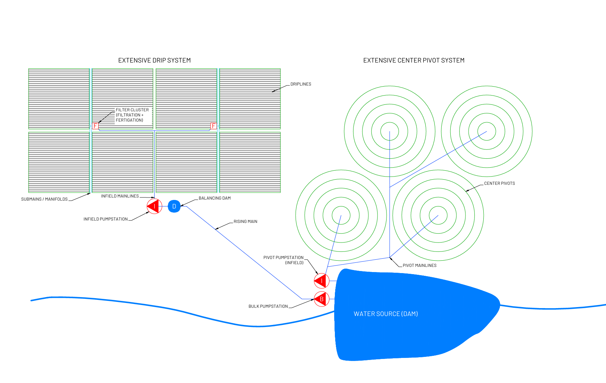
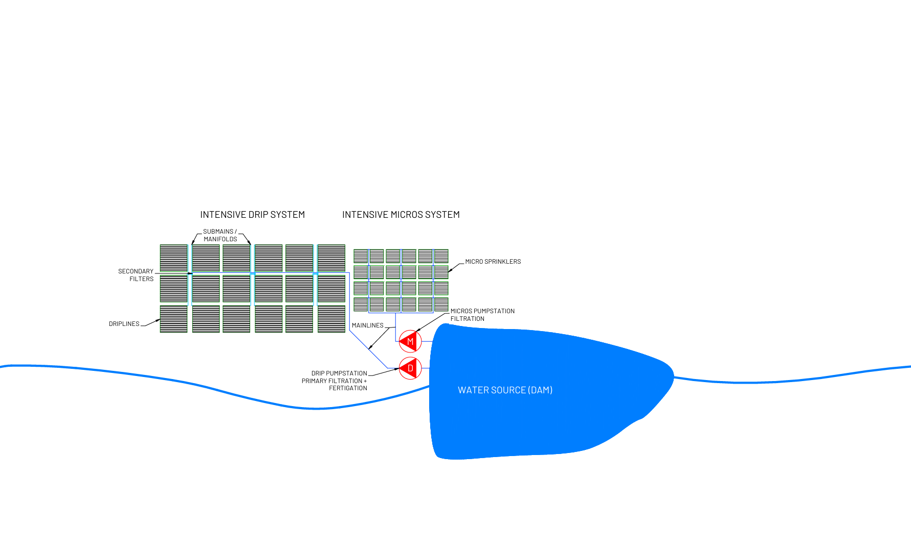

A commercial irrigation system must deliver the required volume of water at the right pressure and at the right time. It must also support the operation's production requirements.
For commercial agricultural operations, choosing a system involves several interconnected decisions. Crop requirements, soil conditions, water availability, topography, energy costs and management capacity all influence which solution makes sense.
This guide explains the main types of agricultural irrigation systems and how their infrastructure works together. It also sets out what to consider before committing to a design.
What are the main types of agricultural irrigation systems?
We group agricultural irrigation systems by how they apply water to the crop. Commercial farms commonly use the five methods below.
| Method | How it applies water | Common applications | Main limitation |
|---|---|---|---|
| Drip irrigation | Emitters on irrigation lines deliver water directly to the root zone | Orchards, vines, row crops and other production systems | Needs filtration and maintenance to manage emitter clogging |
| Micro-sprinkler irrigation | Low-volume sprinklers distribute water over a small area around each plant | Orchards and tree crops, and other crops that suit wetting a wider area around the plant | Needs filtration and maintenance to keep sprinklers clear |
| Centre pivot irrigation | A rotating sprinkler system irrigates a large area around a central point | Large, relatively unobstructed fields | Field geometry, topography and soil infiltration affect suitability |
| Conventional sprinkler irrigation | Fixed or movable sprinkler installations apply water over the crop | Fields of varied size and shape, with fixed or movable layouts | Movable installations add labour |
| Surface irrigation | Gravity moves water across the soil through furrows, borders or basins | Level or gently graded land with a reliable water supply | Uniformity depends on soil, grade and layout |
Soils, budget, farmer preferences and management capability dictate the choice of system. The equipment that applies water is only one part of the irrigation system, as the section on how these systems work explains below.
What determines the right irrigation system for a commercial farm?
No irrigation system suits every agricultural operation. A system that performs well on one farm can be impractical or uneconomical on another. We assess the following factors before a client commits to a design.
- Crop requirements: different crops have different water requirements, planting densities and root structures. These influence how often water must be applied and how it should be distributed.
- Soil characteristics: soil texture, infiltration rate, drainage and water-holding capacity determine how quickly water can go on without runoff or deep percolation.
- Water availability and quality: available volume and seasonal reliability affect system selection, and so does water quality. Water with high sediment or mineral content, for example, may need additional filtration and maintenance provisions.
- Land topography and layout: slope, elevation differences, field shape and existing infrastructure influence pipeline routing and pumping requirements. They also limit which infield systems suit the land.
- Energy and operating costs: operating pressure and pumping requirements have a direct influence on energy consumption, as do irrigation schedules. A system with a lower installation cost can carry higher operating costs, so compare both over the life of the system. Our pipeline lifecycle cost analyser shows what optimising a pipeline looks like.
- Management capacity: labour availability, technical skills, automation and maintenance requirements all matter. The system must suit the people who operate it.
Evaluate these factors together. Selecting equipment on advertised efficiency or purchase price alone can produce a system that does not perform as expected under farm conditions.
How does an agricultural irrigation system work?
An agricultural irrigation system generally has two interconnected components, the bulk water supply system and the infield irrigation system.
Bulk water supply system
The bulk water supply system transports water from its source to a point close to where the crop will use it. A typical system includes the following.
- A water source, such as a dam, river or borehole.
- A pump station to move water through the system.
- A rising main or pipeline to convey water.
- A balancing dam or storage facility.
- Canals, where appropriate, for distribution over longer distances.
The pump station lifts water from its source and delivers it through the rising main. Depending on the design, water may then flow into a balancing dam before it enters the infield system, or travel by canal to its point of use. Where the source sits high enough, offtake works at a weir can channel water into a canal and remove the need for a pump station. A WISA paper on bulk water systems describes this arrangement of pump station, rising main and canal.
Canals can be cost-effective where large volumes of water must travel long distances. Their suitability depends on terrain, available gradients, land requirements and conveyance losses.
The design of this infrastructure determines how reliably water reaches the irrigation area and whether the system can meet the farm's flow and pressure demands. We cover this work under bulk water supply.
Infield irrigation system
Once water reaches the vicinity of the fields, the infield irrigation system takes over. Here the system filters the water, pressurises it where necessary, then distributes it and applies it to the crop.
The configuration varies with the irrigation method and with the size and layout of the operation. A centre pivot distributes water through a rotating pipeline fitted with sprinklers. A drip system uses filtration and a network of pipes and emitters to deliver water to the root zone. Fertigation, which delivers fertiliser through the irrigation water, can also form part of the infield infrastructure.
The bulk water supply and infield systems must work together. A well-designed system delivers the required water volume and pressure while maintaining the specified distribution uniformity across the irrigated blocks.
What is the difference between intensive and extensive irrigation systems?
Beyond the method that applies water, an infield system can be intensive or extensive. The distinction lies in how the infrastructure is arranged across the irrigated area.
| Extensive systems | Intensive systems | |
|---|---|---|
| Typical block size | Often above 10 hectares | Commonly 0.5 to 5 hectares |
| Infrastructure | A central pump station supplies the system, and filtration and fertigation can sit at centralised filter clusters | More infrastructure spread through the area, with dedicated filtration and fertigation per block and secondary filtration near the fields |
| Common examples | Centre pivot and extensive drip installations | Drip and micro-sprinkler installations |
| Management | Large blocks managed from centralised facilities | Needs careful attention to filtration, maintenance and operations |
Extensive irrigation systems
Extensive systems reduce the infrastructure required across large areas, which suits operations that can manage large blocks from centralised facilities. A centre pivot can irrigate an area exceeding 50 hectares, depending on its dimensions, and pivots can be an economical option for large, relatively unobstructed fields. Suitability still depends on field geometry, topography, soil infiltration characteristics and crop requirements.

Intensive irrigation systems
Intensive systems place more infrastructure within a smaller area. Individual blocks may have their own filtration and fertigation facilities, and secondary filtration close to the fields manages the risk of emitter clogging. The appropriate configuration depends on the crop, planting arrangement, water quality, available infrastructure and management requirements.

For further detail, see the SABI overview of irrigation systems and WRC report SE370517.
Why does irrigation system design matter?
The performance of an irrigation system depends on how well its components suit the farm and each other. An undersized pipeline, an unsuitable pump or a poorly configured filtration system can limit the whole installation. Choosing an infield system without considering the bulk water supply can introduce capacity and pressure constraints. A pump sized for the first block, for example, may restrict later blocks when the farm expands.
For commercial agricultural developments, the system choice also sets long-term costs. Evaluate the infrastructure requirements, capital investment, operating costs and long-term production objectives before construction begins.
At Ant Consult, we look at the whole water delivery chain, from the source to the point of application, through our commercial irrigation design and system assessment work. Our independent engineering advice considers the requirements of the operation and the long-term performance of the water system.
Planning a new irrigation development or assessing an existing system?
Book a scoping call to discuss your project.
Frequently asked questions about agricultural irrigation systems
What are the main types of irrigation systems used on commercial farms?
The main types are drip, micro-sprinkler, centre pivot, conventional sprinkler and surface irrigation. The right choice depends on crop, soil, water supply, topography, energy cost and management capacity.
What are the two main parts of an agricultural irrigation system?
An agricultural irrigation system has a bulk water supply system and an infield irrigation system. The bulk water supply system moves water from its source to the fields, and the infield system applies it to the crop.
Which irrigation system is most economical for a large farm?
Centre pivot systems can be economical for large, relatively unobstructed fields because a single installation can irrigate a substantial area. Field shape, soil conditions, pumping requirements, crop type and operating costs must all be considered before choosing the most economical solution.
What is the difference between intensive and extensive irrigation systems?
Intensive irrigation systems have more infrastructure distributed across smaller irrigation blocks, while extensive systems use centralised infrastructure to serve larger areas. The distinction lies in how the infrastructure is arranged, and it applies whichever method applies the water.
Can an existing irrigation system be expanded?
An existing irrigation system can sometimes accommodate additional irrigation blocks, but this depends on the capacity of its water source, pump stations, pipelines and distribution infrastructure. An assessment can identify which components have sufficient capacity and where upgrades may be necessary.